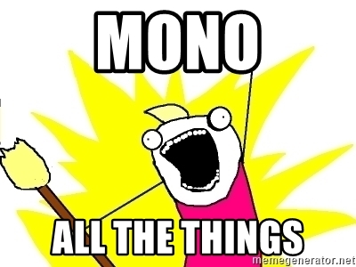

Monorepo -vs- Multirepo
the local dev env should die!
A.K.A.
Tradeoffs and tooling of having all the code base in one place
How do you know how to
build, test, run, debug, deploy
a project ?
Julien Bisconti
Software engineer / DevOps / GDE
Worked at
contact
Github: @veggiemonk
Twitter: @veggiemonk
LinkedIn: julienbisconti
blog: https://veggiemonk.github.io/

❌ Monorepo ≠ monolithic app 🧐
It’s about the development workflow 👩💻
And sharing
surrounding code with colleagues
(build scripts, e2e tests, dependencies, docs, config,…)
Multiple languages ?
Multiple projects ?
What size ?
Everybody should do monorepo?
- mono cloud provider account
- mono k8s cluster
- mono VPC
- mono slack channel
- mono computer (mainframe)
- mono office space (open office)
- mono chair (bench)
- mono coffee machine
- mononucleosis
Monorepo: please don't
@mattklein123/monorepos-please-dont-e9a279be011b
- ✅ Easier collaboration and code sharing
- ✅ Single build / no dependency management
- ✅ Code refactors are easy / atomic commits
- ❌ tight coupling and OSS
- ❌ scalability
Demo: babel (js)

Inside a monorepo
- core + plugins?
- libraries?
- frameworks?
- infrastructure?
- every microservices?
- all backend projects?
- all frontend projects?
- each fullstack projects?
- each departments code?
- whole company code ?
👉 different levels of abstraction
different levels of abstraction
different levels of abstraction

gitlab: from idea to production

Multirepo
1 microservice = 1 repository
Why microservices ?
👉 to ship your organization

source
Jeff Bezos 2002:
- All teams will henceforth expose their data and functionality through service interfaces.
- Teams must communicate with each other through these interfaces.
- There will be no other form of inter-process communication allowed: no direct linking, no direct reads of another team’s data store, no shared-memory model, no back-doors whatsoever. The only communication allowed is via service interface calls over the network.
- It doesn’t matter what technology they use.
- All service interfaces, without exception, must be designed from the ground up to be externalizable. That is to say, the team must plan and design to be able to expose the interface to developers in the outside world. No exceptions.
- Anyone who doesn’t do this will be fired.
- Thank you; have a nice day!
https://plus.google.com/+RipRowan/posts/eVeouesvaVX

credit: Manu Cornet
credit: Manu Cornet
credit: Manu Cornet

credit: Manu Cornet
credit: Manu Cornet

credit: Manu Cornet
tooling
GIT

GOTO 2015 • Deep Dive into Git • Edward Thomson
monorepo with git
- plain git
- git subtree (folder)
- git submodules (black box)
- custom scripts
code storage ≠ deployment

tooling
- splitsh/lite (split monorepo)
- bazel.build (build monorepo)
- lernajs.io (build js monorepo)
- unravelin/tomono (migration)
- korfuri/awesome-monorepo (list of resources)
tooling (cont'd)
Archive git history
git clone file:///Users/$USER/Projects/myProject myClonedProject \
--shallow-since=2016-09-02
source
getting good at monorepo means
- getting good at git and its internals
- being disciplined about code reuse and dependencies
- being disciplined for branches, PR size and documentation
- implementing features toggle and A/B testing
- having the whole picture ie. the whole code base on your hard drive (Linux kernel repo is ~20GB)
- understanding versioning
- immutable build (uniformity)
Being disciplined relates to engineering culture
What about the developer environment ?
Developer environment
- what's an environment ?
- how to reproduce ?
- how to make changes ?
- code << project code
Dev Env with Git submodules
- opt-in ✌️
- lightweight 🥗
- focus on developers 👩💻
- faster onboarding 🙋♂️
demo
IDEA
instead of trying to reproduce locally / mock:
- all the microservices
- all DBs (cluster?)
on your 16GB laptop, why not a
- cloned
- on-demand
- pre-setup
environment ?
Efficient -vs- Effective
# minimalist
in browser editor:
THANK YOU
Github: @veggiemonk
Twitter: @veggiemonk
LinkedIn: julienbisconti
blog: https://veggiemonk.github.io/
slides: https://www.slideshare.net/julienbisconti